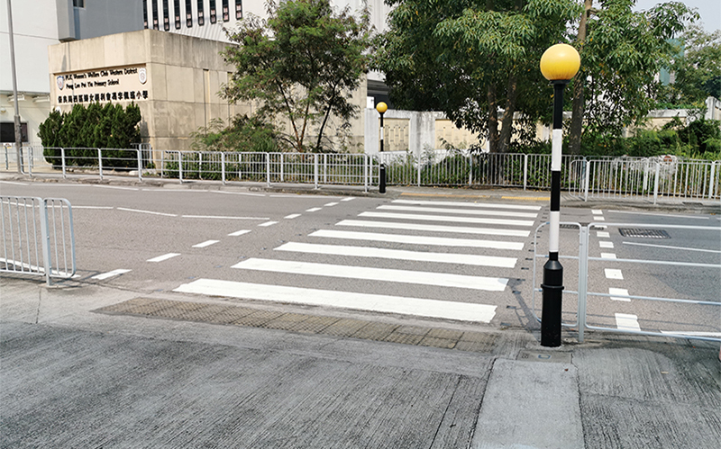

My Vocabulary Page
fancy v(t) //
want something or want to do something
1.1/ Do you fancy a drink this evening?
1.2/ Do you fancy going out for a meal after work?
1.3/ She didn't fancy the idea of going home in the dark.
(="She didn't like the idea of going home in the dark.")
fancy doing something
1.4/ Sorry, but I don’t fancy going out tonight.
1.5/ Do you fancy going out this evening?
1.6/ I didn't fancy swimming in that water.
1.7/ "I wouldn't fancy dating her but I'm not making a personal
judgement out of it."
v(i,t) believe or imagine something
fancy somebody as something
2.1/ He fancies himself as a bit of a singer.
2.2/ She fancies herself as a serious actress.
2.3/ "We fancy him as a love machine."
fancy somebody (doing something)
2.4/ He fancied himself in love with me, the silly boy.
2.5/ "You could fancy her falling in love in a moment with somebody else,
but never with yourself."
2.6/ "when I was younger and when I first read this novel,
I would fancy myself falling for a girl like that."
fancy that ...
2.7/ I fancied that I saw something moving in the corner.
2.8/ She fancied that she could hear footsteps.
v(t) fancy somebody/something: think that somebody/something will
win or be successful at something, esp in a race
3.1/ Which horse do you fancy in the next race?
3.2/ I don’t fancy our chances of getting a ticket this late.
fancy somebody to do something
3.3/ "Taking on her stablemate rival again, we fancy her to do the same
as the Cheltenham festival."
3.4/ Who do you fancy to win the Cup this year?
3.5/ "I fancy Germany over England to win this game."
3.6/ "Tough to call but I fancy Germany to just edge it."
fancy yourself: think you are very attractive or important
4.1/ That Dave really fancies himself, doesn't he?
4.2/ At that time, he was dating a girl who really fancied herself.
4.3/ You could tell by the way they strutted around how much
they fancied themselves.
4.4/ Look at this photo from our teens. We really fancied ourselves.
v(t) be sexually attracted to somebody
5.1/ "I fancied her because of her amazing capability,
not her nice hair and cold attitude."
5.2/ "At a dinner at her place that evening it was clear she fancied me."
5.3/ "I fancied her body equal to her mind, and it was the body
which gave way at last."
fancy n(c,u) //
something that you imagine; your imagination
1/ "It is not quite out of my fancy yet that I may see you next summer."
2/ "She might love the ghost of him if her fancy led her that way."
flight of fancy: an idea that shows a lot of imagination but is not practical
3/ He was talking about cycling across the US or was that just
another flight of fancy?
synonym: fantasy
n(singular) a feeling that you would like to have or to do something
4/ She said she wanted a dog but it was only a passing fancy.
something tickle(/take/strike) your fancy: you like it and want to have or do it
5/ See if any of these tickle your fancy.
6/ I looked in a lot of clothes shops but nothing really tickled my fancy.
7/ If you see something that tickles your fancy, I’ll buy it for you.
fancy adj //
unusually complicated, often in an unnecessary way;
intended to impress other people
1/ He's always using fancy legal words. (see also: jargon)
2/ They added a lot of fancy footwork to the dance.
3/ Negotiating a deal can take some fancy footwork(=skilful methods).
4/ I can’t do all that fancy stuff on the computer.
antonym: straightforward, down to earth
(before noun) with a lot of decorations or bright colours
5/ He was the fanciest dresser in the room.
6/ The decorations were a little too fancy for my tastes./
7/ "The largest and best variety of all kinds of fancy goods for
Christmas trees and house decorations is now ready at our store."
fancy cake
8/ "Sergeant Byrnes is first on the scene and eats a piece of
fancy cake and soon after dies."
9/ "They brew their coffee with Joshua Tree Coffee beans,
serve a great sandwich, tasty fancy cake and all of it with nice music
in the backround in the back of a petrol station store."
nothing fancy
10/ I just want a basic sports coat- nothing fancy.
11/ I wanted a simple black dress, nothing fancy.
(adj) expensive and fashionable
12/ Harry took me to a fancy restaurant for our anniversary.
13/ "Some people might wear a fancy dress on a day-to-day basis because
they feel good in them and they like to dress up."
14/ "He asked all his guests to wear a fancy dress to the party."
15/ "In middle school a girl once wore a fancy skirt to school
to impress me."
see also: swanky, classy, stylish, fashionable, splendid
dream n(c) //
(usual meaning) a dream
1.1/ I had a really weird dream last night.
1.2/ 'Good night. Sweet dreams.'
1.3/ Don't think about it. You'll only give yourself bad dreams.
1.4/ I thought someone came into the bedroom, but it was just a dream.
a dream about somebody/something
1.5/ I had a very strange dream about you last night.
1.6/ It is a vivid dream about my old school.
1.7/ I fell into a dream about drowning.
a dream about doing something
1.8/ I have a recurrent dream about being late for an exam.
have a dream that ...
1.9/ I had a dream that we were getting married at the airport.
1.10/ Paul had a dream that he won the lottery.
in a dream, in your dream
1.11/ His dead mother appeared to him in a dream.
wake (up) from a dream
1.12/ I woke up from a dream.
1.13/ Last night I woke from a dream in the middle of the night.
wake me (up) from a dream
1.14/ You woke me from a dream.
1.15/ "A snapping sound in my ear just woke me up from a dream."
see also: a nightmare, a wet dream
n(c) a wish to have or be something, esp one that seems difficult to achieve
2.1/ Her lifelong dream was to be a famous writer.
2.2/ "My dream is to become a good, helpful and hardworking teacher."
2.3/ He wanted to be rich but it was an impossible dream.
2.4/ It was the end of all my hopes and dreams.
a dream comes true
2.5/ I hope my dream comes true.
fulfill/achieve/realize a dream
2.6/ Now is a chance to fulfil a childhood dream.
2.7/ "What does it takes to achieve a dream?"
2.8/ "Finally I realized my dream of studying abroad in the USA.
destroy/shattered a dream
2.9/ "Nobody can destroy your dreams."
2.10/ "My Dream is shattered into pieces."
2.11/ "My dream is shattered, and now I have to look ahead to the future."
pursue/chase/go after a dream
2.12/ "Should I just focus on school and go with the flow or chase my dream?"
2.13/ "Stay focused, go after your dreams and keep moving toward your goals."
a dream for somebody/something
2.14/ The chance to study in Australia had always been a dream for her.
2.15/ "My dream for the future is shaped by my experience in the past."
2.16/ The conversation turns to his dreams for the future.
a dream of something/doing something
2.17/ He left his job to pursue his dream of opening a restaurant.
2.18/ The film is an exploration of a young boy's dream of a better life.
2.19/ "The dream of starting up my own business has always been
in the back of my mind."
2.20/ "Brett continued for several years down this road
but he had always had a dream of becoming a police officer
and kept the idea in the back of his mind."
2.21/ "A little girl from Rochester with autism has big dreams of
becoming a police officer when she grows up."
a dream that ...
2.22/ He had a dream that one day his people would be free.
2.23/ "I have a dream that one day this nation will rise up and live out
the true meaning of its creed: We hold these truths to be self-evident,
that all men are created equal." (Martin Luther King Jr.)
something of your dreams : the best that you can imagine
2.24/ I've finally found the man of my dreams.
2.25/ "Get the laptop of your dreams and own your favourite gadgets with
chopped up monthly payments when you shop with our partner merchants."
2.26/ Win the house of your dreams in our fantastic competition!
(adj) my dream job, my dream car, my dream house
2.27/ Being a TV presenter would be my dream job.
2.28/ "I have a girlfriend but I just met my dream girl."
2.29/ "After my husband died, I took my savings and bought my sloop,
and went on my dream voyage."
2.30/ It had always been their intention to build their dream house.
see also: an ambition, apsirations
n(sinular) a state of mind or a situation in which things do not seem
real or part of normal life
3.1/ As if slowly emerging from a dream, she raised her head.
3.2/ "Dazed and confused, we can emerge from a dream wondering
which world we actually belong to."
in a dream
3.3/ She walked around in a dream all day.
3.4/ "Why do you always live in a dream?"
3.5/ She found herself standing in front of the crowded hall and
making her speech, as if in a dream.
see also: a daydream
dream v(i,t) //
(usual meaning) experience a dream
1/ Did I talk in my sleep? I must have been dreaming.
dream about somebody/something
2/ I dreamed about you last night.
3/ "Why do I constantly dream about my school days and how can I stop?"
dream about doing something
4/ "You are my Valentine. I would dream about dating you."
dream of somebody/something
5/ I often dream of flying.
6/ "I dream of my sister choking me."
7/ "Those who dream of losing hair can take it as a sign of crisis."
dream something
8/ Did it really happen or did I just dream it?
9/ "Tonight, I dream my death, and happy I will be to return to the stars."
dream that ...
10/ I dreamed that I was having a baby.
11/ I dreamt that I got the job.
v(i,t) imagine and think about something that you would like to happen
12/ It might never happen, but I can dream, can't I?
dream of/about something
13/ It was the kind of trip most of us only dream about.
14/ "Do you dream of a tranquil life with plenty of space, surrounded by nature
and a sense of safety for both children and adults - without having to
compromise on public services and the opportunities of having
an interesting job?"
dream of/about doing something
15/ She dreams of running her own business.
16/ Jason always dreams of becoming a singer.
17/ "As a child, I never dreamed of becoming a teacher.
I just trust the flow of life."
would't dream of something
18/ I wouldn't dream of going without you.
19/ "I wouldn't dream of a world without light!"
dream that ...
20/ I never dreamt that I’d actually get the job.
21/ He never dreamed that one day he would become president.
dream something
22/ Who'd have dreamt it? They're getting married.
hand over v //
hand something/somebody to somebody:
give something/somebody officially or formally to another person
1/ We were ordered to hand over our passports.
2/ He handed over a cheque for $200,000.
3/ They handed the weapons over to the police.
4/ They would simply hand her over to the magistrate as a thief.
5/ The hijacker was handed over to the French police.
6/ If you hold on a moment I'll hand you over to someone who might be able to help.
n(c,u) handover
7/ "This culminated in the payment of an agreed ransom by the Kuwaiti company
that employed the drivers, followed by a safe handover of the hostages."
hand over something to somebody:
give somebody else control of or responsibility for something
8/ She resigned and handed over to one of her younger colleagues.
9/ He handed over his responsibility for the firm last year.
10/ "You prepare to hand over your duties to your successor."
11/ The founder handed the company over to his sons.
12/ "The BNO was issued to people in Hong Kong by the UK before Hong Kong
was handed over to China."
n(c,u) handover
13/ "The handover of Hong Kong from the United Kingdom to
the People's Republic of China was at midnight on 1 July 1997."
favourite adj // or //
US: favorite (before noun) liked more than others of the same kind
1/ It's one of my favourite movies.
2/ What is your all-time favourite song?
3/ Who is your favourite writer?
least favourite
4/ Cleaning the toilets is my least favourite job.
5/ January is my least favourite month.
favourite n(c) //
a person or thing that you like more than the others of the same type
1/ These are my favourites.
2/ The band played all my old favourites.
3/ How clever of you to buy chocolate chip cookies - they're my favourites.
one of my favourites
4/ One of my personal favourites is a movie that should please every age group.
5/ "Maybe this day is not one of your favourites, but never forget that
every day you wake up is an amazing gift."
a favourite of somebody's
6/ This song is a particular favourite of mine.
7/ "This vintage midi skirt is about to be a favourite of yours!"
a favourite with somebody
8/ The programme has become a firm favourite with young people.
9/ "Chinese Chess is a favourite with the elderly."
n(c) a person who is liked better by somebody and receives
better treatment than others
10/ Parents should never have favourites.
11/ She loved all her grandchildren but Ann was her favourite.
a favourite with somebody
12/ "He is a favourite with teachers for his mild manners."
a favourite among somebody
13/ "She is a favourite among our pre-schoolers,
and her boundless energy and enthusiasm constantly leaves us in awe."
see also: be inclined to somebody
n(c) the person or animal most people expect to win a race or competition
14/ The favourite came third.
15/ Great Gold is the favourite in the 2.00 race at Epsom.
the hot favourite
16/ He's the hot favourite to win the election.
the favourite for something
17/ Her horse is the hot favourite for the race.
18/ She is the favourite for the job.
the favourite to do something
19/ Brazil are favourites to win this year's World Cup.
20/ She is the favourite to succeed him as leader.
see also: an underdog
favour v(t) //
(US:favor) support or prefer one particular possibility
1/ "I favour a watch that I can wear for business meetings."
2/ It’s a resort favoured by families with young children.
3/ These are the running shoes favoured by marathon runners.
4/ With make-up I favour a minimalist approach.
5/ Another solution, which I strongly favour, is lower taxes for everyone.
favour something over something
6/ She favours hugs over handshakes.
7/ "I think a lot of authors favour cats over dogs."
8/ In the survey, a majority of people favoured higher taxes and
better public services over tax cuts.
favour doing something
9/ I generally favour travelling by night, when the roads are quiet.
10/ "I do not favour dining while people pass by to and fro."
v(t) give an advantage to somebody or something, in an unfair way
11/ The treaty seems to favour the US.
12/ A strong wind will favour the bigger boats.
13/ My parents always favoured my older(/elder) brother.
14/ He favoured some individuals at the expense of others.
favour somebody(/something) over somebody(/something)
15/ News coverage should not favour one party over another.
16/ "The bank's policies favoured the rich over the poor."
17/ "Delta Air Lines is hinting that its frequent flier program will
increasingly favour big spenders over travellers who simply rack up miles."
v(t) provide suitable conditions for a particular person/group/etc
18/ The warm climate favours many types of tropical plants.
19/ "Arid regions favour camels compared to horses."
v(t) protect or avoid using one leg/hand/arm because it is painful or injured
20/ He limped slightly, favouring his left leg.
21/ She was leaning against the table to favour her sprained ankle.
22/ "I had done years of hunching, had limped due to injury and
had favoured my left leg."
favour n(u) //
approval or support for somebody/something
1.1/ Artists sought the favour of wealthy patrons.
1.2/ These plans are unlikely to find favour unless the cost is reduced.
favour with somebody
1.3/ The suggestion to close the road has found favour with local people.
gain/win/lose favour with somebody
1.4/ The programme has lost favour with viewers recently.
1.5/ He sent her presents in an attempt to win her favour.
1.6/ "The one who finishes the race first, will win and gain my favour."
favour among somebody
1.7/ The policy is gaining favour among voters.
in favour with somebody
1.8/ She's not in favour with the media just now.
1.9/ Her economic theories are in favour with the current government.
1.10/ It seems Tim is back in favour with the boss.
1.11/ "Jesus grew in favour with God."
out of favour with somebody
1.11/ Reality TV has begun to fall out of favour with viewers.
1.12/ She is out of favour with her colleagues.
(other examples)
1.13/ an athlete who fell from favour after a drugs scandal
1.14/ The government looks with favour upon the report's recommendations.
n(u) be in favour of something/doing something:
support or approve of something
2.1/ Are you in favour of a ban on smoking?
2.2/ I'm not in favour of hitting children.
2.3/ The Council voted in favour of a £200 million housing development.
2.4/ "New owners may want to sacrifice some of that garden
in favour of a bigger house."
2.5/ I'm all in favour of equal pay for equal work.
n(u) in your favour: if something is in your favour,
it gives your an advantage or helps you
3.1/ The exchange rate is in our favour at the moment.
3.2/ She was willing to bend the rules in Mary's favour.
3.3/ The golf tournament went in the Americans' favour.
3.4/ This candidate has a lot in her favour, especially
her experience of teaching.
n(u) treatment that is generous to one person or group in a way
that seems unfair to others
4.1/ As an examiner, she showed no favour to any candidate.
n(c) an advantage that you give to someone, esp when this is unfair
4.2/ Several politicians were accused of dispensing favours to
people who voted for them.
4.3/ "Politicians provide favors for voters in exchange for their votes
to win elections."
see also: bias, a bribe, a payoff
n(plural) a small present that you give to every guest at a wedding/party/etc
5.1/ wedding favors
5.2/ He handed out the party favors as we were leaving.
see also: a souvenir
do somebody a favor n(c) //
a favour: a thing that you do to help somebody
1/ Can I ask you to do me a favour?
2/ Could you do me a favour and pick up Sam from school today?
3/ Could you do me a favour - would you feed my cat this weekend?
do a favour for somebody
4/ Can you do a favour for me?
5/ "If you can do a favour for Jesus, the best you can do
is to say Jesus, I love you."
ask (somebody) a favour
6/ Can I ask a favour?
7/ Can I ask you a favor?
8/ She called to ask me a favour.
ask for a favour
9/ I would never ask for any favours from her.
10/ I would like to ask you for a favour.
owe somebody a favour
11/ You owe me a favour!
return a favour
12/ Thanks for helping me out. I'll return the favour some time.
13/ "Irish return a favour to Native Americans 173 years later
as Covid wreaks havoc."
as a favour to somebody
14/ I'm going as a favour to Ann, not because I want to.
do yourself a favour: help yourself
15/ Do yourself a favour and wear a helmet on the bike.
query n(c) //
a question, esp one asking for information or expressing
a doubt about something
answer your query
1/ Our assistants will be happy to answer your queries.
have a query
2/ Most of the job involves sorting customers out who have queries.
3 "If you have any queries, please feel free to contact me at 123-456-7890."
respond to your query, a response to your query
4/ What was their response to your query?
5/ We will respond to your query or complaint as soon as possible.
evade/ignore a query
6/ "However, upon his return to the guest house, Acharya continued to
evade all queries and insisted that he was having a heart problem."
7/ "They just blocked the account and ignored any query."
a query about something
8/ If you have a query about your insurance policy, contact our helpline.
9/ If you have any queries about your treatment, the doctor will answer them.
10/ We have received many written queries about the product.
see also: inquiry, complaint, question
query v(t) //
ask a question
1/ 'Any chance of a cup of tea?' he queried hopefully.
2/ "The call center person queried my date of birth."
query your mark
3/ A few students have queried their marks.
4/ "If you wish to query your mark, please check the online solutions first,
and collect and check your marked script."
5/ "You have three days once marks have been released to query your mark
and request a review, after that, your query can unfortunately not be considered."
query somebody (on something)
6/ I queried a few people on the subject.
7/ "We query an expert on the correct answers."
query somebody for something
8/ "Don't ever query me for not celebrating you."
9/ "APC did not query me for advocating restructuring of Nigeria."
query somebody about something
10/ "The elderly woman at reception was curt /kɜrt/ and queried me twice
about payment even though I had paid her."
11/ "Over a cup of coffee, he queried me about my research interests."
12/ "The female agent couldn't have been nicer as she queried me
about the type of bra I was wearing."
see also: inquire, ask somebody about something
v(t) express doubt about whether something is correct or not
or what something means
13/ We queried the bill as it seemed far too high.
14/ He hoped his expense account would not be queried too closely.
query a decision
15/ I'm not in a position to query their decision.
16/ Both players queried the umpire’s decision.
query somebody about something
17/ Lawyers queried Ann about what she wore that day.
18/ "If a government official or policeman queried me about my research,
I could say I had the cooperation of the Prime Minister."
query + wh-clause
19/ Many people are querying whether the tests are accurate.
20/ Both novels query what it means to be American.
see also: doubt, question, challenge
kiosk n(c) //
a small building where things such as chocolate, drinks, or newspapers
are sold through an open window 小賣亭
1/ I bought a paper from the kiosk across the road.
2/ I usually buy my paper from the kiosk at the station.
a kiosk held/owned/managed by somebody
3/ "This kiosk was held by some Europeans who proposed to their customers
experimental sciences in the form of a coconut."
4/ "It is the kind of snack found in a kiosk owned by an old man
next to school and youngsters buy with the small change saved from
your daily lunch money."
5/ "We came across a kiosk managed by a bunch of Sikhs."
6/ "Spyros is 29 years old and works at a kiosk managed by his father and uncle
on busy central Patission Street."
run(/operate/look after) a kiosk
7/ "Certain state permits and licenses may be needed to operate a food kiosk."
8/ "In order to run a food kiosk, you need some of the things that apply to
every other business startup."
9/ "The parents also run a food kiosk stocked withfruit, bagels,
snack food and drinks."
10/ "She has employed four women in her startup, who help her and also look after
the kiosk independently whenever Tapsi is unable to come and run it by herself."
a newspaper kiosk
11/ She stopped at a newspaper kiosk to pick up a copy of today's newspaper.
12/ "If you walk from the inside of the Admiralty station to the C1 Exit,
you will find a newspaper kiosk once you step out of the Queensway Plaza."
an information kiosk
13/ "The Tourist Information Kiosk within Disneyland Paris sells
tickets for admission to historic buildings and museums,
reservations for cruises, nightclubs, shows and entertainment
in the area as well as other trips."
a station kiosk
14/ "I bought cigaretters in a station kioski before boarding the train."
a refreshment kiosk, food kiosk
15/ "Two days later the two ran into each other again at the school's food kiosk
and decided to settle things in a changing room."
16/ "There is always a food kiosk in every school."
17/ "Now your spectators can get all the nourishment they need
from our refreshment kiosk."
see also: a snack bar, a stall, a booth
n(c) (machine) a small machine in a public place which you can use
to get tickets or information about something
18/ a digital information kiosk
19/ Passengers can use the touch-screen kiosks to receive a boarding pass.
20/ With the goal of one-stop service, the kiosk lets guests select rooms
and print hotel receipts and airline boarding passes.
a smart vending kiosk
21/ The smart-vending kiosk is embedded with a Wi-Fi connection.
22/ "It is a self-service smart vending kiosk for controlled items
with finger vein verifications for age and consumption control."
n(c) a phone booth
stall n(c) //
a table or small shop with an open front that people sell things from,
esp at a market 貨攤
1.1/ She runs a stall in the market.
1.1/ The stall sells drinks and snacks.
1.2/ In the village market, the stalls are piled high with local vegetables.
1.3/ In the summer months, the stall is laden with colourful fruit and vegetables.
1.4/ The stall is full of flowers and the blue color of the brand.
1.5/ "I picked up a very rare hardback from a stall by the seaside."
run/operate a stall
1.6/ "Stallholders who are unable to operate due to old age or ill health
can appoint an immediate family member to operate the stall on
his or her behalf and continue paying the subsidized rent."
1.7/ "Jane Arnold has run a stall on the market for about 20 years."
sell wares in a stall
1.8/ "I had just bought goods worth USD 500 from Uganda to sell in my stall
at the market."
1.9/ "Other things I sell in my stall are flowers and juice
- these are just a few things I do just so I could provide food for my family."
1.10/ There were fruit stalls along the roadside.
(market) a market stall, a fish stall, a vegetable stall
1.11/ He works on a market stall in the Square.
1.12/ They have a fish stall on the market.
1.13/ The gaily striped awnings of the little shops and market stalls
made an attractive scene.
1.14/ He runs a fruit and vegetable stall in the market.
1.15/ "There are hats on display on a clothing stall at a local weekly market."
1.16/ "A Meat Stall with the Holy Family Giving Alms" (Pieter Aertsen)
a street stall
1.17/ "Every house has turned into a street stall, offering water, soft drinks
and home-cooked snacks."
a bookstall
1.18/ He went to a bookstall and abstracted a book.
1.19/ "There is a bookstall right next to the exit of the station."
an ice-cream stall
1.20/ "I opened an ice-cream stall at my gas station."
a pop-up/makeshift stall
1.21/ Drinks were being sold from makeshift stalls at the side of the road.
1.22/ "After a resounding success Accrington Market have announced they will
be offering the opportunity for pop-up stalls every Saturday going forward,
at a cost of just £20 per stall.
n(c) a push cart, a wooden cart
2.1/ "He became a food peddler, selling butter and eggs from a wooden cart."
2.2/ "Offering a smile, she pushed her wooden cart over to him and
the two friends began to make their way to her home."
2.3/ "A 90-year-old authorized street hawker had her roasted chestnut cart
confiscated by authorities on Monday after she left the spot temporarily"
2.4/ "Chan Tak-ching has asked for the return of her seized cart
and says the rules about hawkers were drawn up when far more hawkers
used the streets."
(remark: it means than hawkers had unofficaily arranged and decided
who were allowed to hawk on the street among themselves, in a way
unjust to the 90-year-old elderly)
n(c) a stall on wheels
3.1/ "Walid has plans to set up market stalls in other locations,
and eventually have a stall on wheels."
n(c) a mobile stall, a push-cart stall
3.2/ "In Hong Kong, mobile stalls are used by the street hawkers to sell
inexpensive goods and street food, like eggettes, fishballs and cart noodles
since the 1950s."
3.3/ "A push-cart stall selling mango glutinous rice, cut pomelo fruit
and Thai desserts along the street in Chinatown, Bangkok."
see also: a food truck, a slushy van, an ice cream van
outstanding adj //
(excellent) clearly very much better than what is usual
an outstanding achievement/success/performance
1/ That was a quite outstanding performance!
2/ His performance was outstanding.
3/ This is an outstanding achievement as the programme is specially
aimed at the longer-term unemployed.
4/ "The competition has been an outstanding success and
the European Commission received more than 10,000 drawings from
61 different countries."
5/ "The financial success of the Manchester United is outstanding upon
comparing this profit to that of the red football limited."
an outstanding player/team/student
6/ "Is there an outstanding player in your club or league who has
what it takes to be a Lioness of the future?"
7/ "The Manchester United is always an outstanding team."
8/ "The Hong Kong Outstanding Students Award"
9/ "An outstanding student has a habit for asking questions
and finding the answer to their queries."
an area of outstanding natural beauty (abbreviation: AONB)
10/ "There are 46 AONBs across Britain, and a handful of these
are fairly close to London."
11/ "The Northumberland Coast is one of the best areas of
outstanding natural beauty in UK."
see also: exceptional, extraordinary, stellar
not yet paid, done or solved
an oustanding debt/ a debt outstanding
12/ She has outstanding debts of over £500.
13/ We’ve got quite a few debts still outstanding.
an oustanding payment/ a payment outstanding
14/ "Waiting for an outstanding payment to become overdue is not
the best course of action."
15/ "As long as a business has provided satisfactory work for
a client as agreed upon, the business has the legal right to demand
an outstanding payment."
16/ I have an outstanding payment from three years ago.
17/ "These proprietors had a payment outstanding from the 2010/11."
an outstanding problem/ a problem outstanding
18/ The negotiations failed to solve outstanding issues.
19/ There are still a couple of problems outstanding.
stand out v //
stand out be much better than other similar people or things
stand out as something
1/ Four points stand out as being more important than the rest.
2/ That day still stands out as the greatest day in my life.
stand out from something
3/ We had lots of good applicants for the job, but one stood out
from the rest.
4/ "His performance stood out from his peers, so his superiors
assigned him a big project."
stand out among something
5/ Three of the cars we tested stood out among the rest.
6/ "Ross stands out among the Class of 2021 as an exceptional student
and stellar athlete."
be easily seen or noticed
stand out in something
7/ She's the sort of person who stands out in a crowd.
8/ I am sure illnesses stand out in all childhood memories.
stand out against something
9/ The lettering stood out well against the dark background.
10/ The black lettering really stands out against that background.
11/ The outlines of rooftops and chimneys stood out against the pale sky.
fantasy n(c) //
a pleasant situation that you imagine but that is unlikely to happen
1/ Writing songs was just a fantasy of mine.
2/ Steve's favourite fantasy was to own a big house and a flashy car.
3/ "We live in a world full of sexual fantasies and deviant thoughts."
a fantasy about something
4/ He spoke of his childhood fantasies about becoming a famous football player.
5/ I used to have fantasies about living in Paris with an artist.
6/ "Gilmore Girls is a fantasy about living in a walkable community."
n(u) the act of imagining things; a person’s imagination
7/ This is a work of fantasy.
a fantasy world
8/ Stop living in a fantasy world.
9/ She retreated from life into a world of fantasy.
10/ He lived in a fantasy world of his own, even as a small boy.
pure fantasy
11/ Memories can sometimes be pure fantasy, rather than actual recollections.
n(u) (writing) a fantasy novel
12/ "Notre-Dame de Paris is a medieval fantasy novel."
13/ His preferred reading was horror stories and fantasy.
14/ She wrote a series of fantasy novels filled with wizards,
witches and dragons.
remark: Notre-Dame de Paris /''nəʊtrə'da:m.də.'perɪs/ 巴黎聖母院
fantasize v(i,t) //
(UK: fantasise) imagine a fantasy
fantasize something/doing something
1/ He spent his time fantasizing revenge.
2/ "Are you one of those men who have fantasized dating Ukraine women?"
3/ "I fantasized dating her, making out with her."
fantasize about somebody/something
4/ He sometimes fantasized about winning the gold medal.
5/ "Is it bad if I fantasize about you?"
6/ He fantasized about winning the Nobel Prize.
fantasize that ...
7/ I used to fantasize that of all the girls in the class he would choose me.
8/ As a child, Emma fantasized that she would do something heroic.
9/ "I am obsessed with fantasising about becoming a billionaire
through my passions."
fantastic adj //
extremely good; excellent
1/ 'Fantastic!'
2/ You look fantastic in that outfit.
3/ It’s a fantastic place, really beautiful!
4/ She's a fantastic all-round sportswoman.
5/ We had a fantastic meal at that new restaurant.
6/ The weather was absolutely fantastic.
7/ You have done a fantastic job.
8/ It was a fantastic achievement.
9/ This was a fantastic opportunity for students.
It is fantastic to do something
10/ It was fantastic to see so many families enjoying themselves.
11/ "It is fantastic to see the hard work of our staff recognised
through this award."
adj(before noun) strange and imaginary
12/ "Unicorns, centaurs, mermaids, hippogriffs, dragons and phoenixes
are popular fantastic creatures across the world."
13/ "The Fantastic World of Zali by Galiana Le Diagon"
14/ "The Undersea Warship: A Fantastic Tale of Island Adventure
by Oshikawa Shunro"
adj (amount) enormous; larger than you expected
15/ The car costs a fantastic amount of money.
16/ Kids spend fantastic amounts of money on CDs.
roll v(i,t) //
turn over and over and move in a particular direction;
make a round object do this
roll off something
1.1/ The coin rolled off the table.
1.2/ The vase rolled off the edge of the table and smashed.
roll down something
1.3/ The ball rolled down the hill.
1.4/ Tears rolled down her cheeks.
1.5/ "You should find that a solid object will always roll down the ramp
faster than a hollow object of the same shape."
roll on/onto something
1.6/ We watched the waves rolling onto the beach.
1.7/ "I am rolling on the floor."
roll something (+adv/prep)
1.8/ Delivery men were rolling barrels across the yard.
1.9/ "Sisyphus /'sɪsɪfəs/ rolls a boulder up the hill every day."
(other examples)
1.10/ The marble rolled behind the sofa.
1.11/ I rolled the wheel along the side of the road back to the car.
v(i,t) (spin; rotate)
2.1/ The horse is a rolling in the mud.
2.2/ He was rolling a pencil between his fingers.
2.3/ He rolled his shoulders back.
your eyes roll, you roll your eyes
2.4/ Lucy rolled her eyes as Tom sat down beside her.
2.5/ "When I eat too much, my eyes roll back and I feel like I am
going to pass out."
2.6/ When he suggested they should buy a new car, she rolled her eyes
in disbelief.
v(i,t) roll over (somebody/something): turn over (somebody/something)
3.1/ She rolled over to let the sun brown her back.
3.2/ He quickly rolled over and got to his feet.
3.3/ The paramedics rolled him over to make it easier for him to breathe.
3.4/ "A truck rolled over on a major Melbourne freeway."
3.5/ "I roll my car over to let the rain clean the underside."
roll (somebody/something) over on/onto something
3.6/ The dog rolled over onto its back.
3.7/ I rolled over onto my stomach.
3.8/ I rolled the baby over onto its stomach.
roll (somebody/something) onto the side
3.9/ She rolled the patient onto his side.
3.10/ "I roll to my side to find myself staring into a pair of pale blue eyes."
3.11/ "When I wake, I roll to the side and pull the covers over my head."
v(i,t) move smoothly on wheels or as if on wheels;
make something on wheels do this
4.1/ He rolled the trolley aside.
4.2/ He rolled the cart across the room.
4.3/ "Soviet tanks rolled into the city that night."
roll forwards/backwards/upwards/downwards
4.4/ The traffic rolled slowly forwards.
4.5/ The car began to roll back down the hill.
4.6/ "Your dead weight comes into play when you have to roll a car up
on flat tires."
4.7/ "My bike rolled down the hill."
roll a stroller, roll a dolly, roll a shopping cart
4.8/ "These grandparents are rolling a stroller with their grandson in winter."
4.9/ "You always love to roll a shopping cart in an supermarket.
4.10/ "He rolled a dolly stacked with barrels of different flavors."
v(i,t) make something/yourself into the shape of a ball or tube
5.1/ We rolled up the carpet /'ka:r.pɪt/.
5.2/ "The boy delivered a rolled-up newspaper to him."
roll (something) into something
5.3/ I rolled the string into a ball.
5.4/ He rolled the clay into a ball.
5.5/ The hedgehog rolled up into a ball.
5.6/ "Roll yarn into a ball really fast and funny!"
5.7/ Roll the mixture into small balls and place them on a baking tray.
5.8/ "To make a DIY kaleidoscope, you first roll a piece of paper
into the shape of a tube."
v(t) roll your clothes up/down
6.1/ Roll up your sleeves.
6.2/ You'd better roll your sleeves up or you'll get them dirty.
6.3/ Alice rolled down her sock to reveal a scar on her ankle.
6.4/ "Hope you remembered to roll up your trouser leg before going!"
6.5/ "Sit on the table behind you and roll up your trouser leg."
6.6/ She rolled up her pants so they wouldn’t get wet.
roll something to something
6.7/ "She rolled her jeans to her knees."
6.8/ "The acupunturist gave me a hospital gown and asked me to take off
my shoes and socks and roll my jeans to my knees."
6.9/ "If I were a local man I'd just roll my T-shirt up to my ribs."
v(t) (flatten) make something flat by pushing something heavy over it
7.1/ Roll the pastry on a floured surface.
7.2/ She borrowed a garden roller to roll the grass flat.
7.3/ Pizza dough should be rolled thinly.
7.4/ When you have rolled out the pastry, place it in a pie dish.
v(t) wrap or cover somebody/something/yourself in something
8.1/ Roll the meat in the breadcrumbs.
8.2/ He rolled himself up in the blanket /'blæŋ.kɪt/.
8.3/ "For easier rolling, some chefs roll the fillings in lettuce first,
then in the wrapper."
Glossary
v(t) roll a dice
1/ Each player rolls their dice.
2/ Players take turns rolling a die and moving around the board.
3/ "I rolled a six so I could move an airplane piece to my launch area."
(see also: Aeroplane chess)
v(i,t) a machine rolls(/roll a machine): operate
4/ 'Roll the cameras!'
5/ Just as the television cameras started rolling, it began to
pour down with rain.
roll n(c) //
n(c) (food) a small loaf of bread for one person
1/ Bake the rolls for 18–20 minutes.
a bread roll
2/ "Go buy a bread roll from the café."
3/ "I used to make garlic bread rolls by putting garlic herb butter
on some hawaiian rolls."
a chicken/bacon/cheese roll
4/ "While having a coffee enjoy a cheese roll!"
5/ "I am told not to devour a bacon roll before a football match."
an egg roll, a spring roll
6/ "A tin box of egg rolls is always the perfect gift for you
to give to your friends and family during Chinese New Year."
7/ "These yummy spring rolls are priced at $5.95."
n(c) a roll of paper/cloth
8/ a roll of wrapping paper
9/ "a roll of horse racing newspaper"
10/ There's a roll of kitchen paper next to the sink.
11/ "I want to buy rolls of toilet paper in bulk."
12/ "Grab a roll of cling wrap to protect your food and other household items."
13/ "Always store a roll of velvet in a horizontal and hanging position,
either in a special shelving system or in the original box within its suspension."
14/ She bought rolls of silk that seemed ridiculously cheap.
n(c) a roll of sweets or candy
15/ "If there are 8 mints in a roll of sweets, how many mints are there
in 3 rolls of sweets?"
16/ "That's just a roll of candy in my pocket."
Glossary
n(c) an act of rolling the body over and over
17/ The kittens were enjoying a roll in the sunshine.
18/ "The player dived and had a roll on the football pitch."
a forward roll 前滾翻, a backward roll 後滾翻, a cartwheel 側手翻
19/ He did a forward roll to celebrate his goal.
20/ I can do a cartwheel myself.
n(c) a roll of a dice
21/ The order of play is decided by the roll of a dice.
22/ "The probability that the same face appears on all five rolls of a dice
is 1 in 7776."
yummy adj //
(delcious) very good to eat
1/ a yummy chocolate cake
2/ These biscuits are yummy.
3/ "These chiffon cake and lemon tart were both yummy."
4/ There are some yummy-looking desserts over there.
5/ "Cook a yummy dinner in just five minutes."
wind v(i,t) //
past simple/past participle: wound /waʊnd/
(wind up) make a clock or a machine work by turning a knob or handle
several times; be able to be made to work in this way
1.1/ He had forgotten to wind his watch.
wind a handle/knob/key
1.2/ "When we wind the key of the car, we actually wind the spring."
1.3/ She wound the handle but nothing happened.
wind something up
1.4/ "I wind up the old clock everyday."
1.5/ "How often do you wind up a grandfather clock?"
1.6/ "Once she was in the car, she wound the window up."
1.7/ "To wind the bath toy up, you need to rotate the key colockwise."
1.8/ "Wind up the knob and watch your Hello Kitty wind-up toy car go."
something winds up (see also: a wind-up toy)
1.9/ It was one of those old-fashioned gramophones that winds up.
1.10/ "The toy winds up and works well but key is missing."
1.11/ "The toy car winds up with the key and then drives around the track
through the tunnel."
wind something down
1.12/ "Wind down the car window if you want to talk to me."
1.13/ "How far do you need to roll down your car window when interacting
with the police during a traffic stop?"
v(t) wrap or twist something around itself or something else
wind something
2.1/ "Wind a microphone or music cable."
2.2/ "This invention helps wind a fish line on a reel."
wind something in/into something
2.3/ She winds the string into a ball.
2.4/ "To wind the yarn into a ball, hold onto one end of the yarn
and use your arm movements to guide the yarn into a ball."
2.5/ "Wind a cable in a figure eight(8)."
2.6/ "Wind a rope in a figure of eight."
wind something around something
2.7/ She wound a scarf around her neck.
2.8/ You wound a small bandage around my finger.
2.9/ He wound the bandage tightly around his ankle.
2.10/ "Use both hands to wind thread around a spool."
wind up something
2.11/ "Wind a cable up onto the cable drum."
2.12/ "A professional stagehand wind a rope up around her elbow."
2.13/ "Wind cable up so it doesn't tangle next week!"
wind (up) a bobbin, wind (up) a spool
2.14/ "Wind a bobbin on a sewing machine."
2.15/ "I built and coded a machine that would wind up a spool of thread
when a button was pressed;
wind something together
2.16/ They wind individual strands of fibre together to make home-made rope.
v(i) wind around/over/into something
2.17/ "The cable winds over pulley at the top of the crane as the cube is raised,"
2.18/ "A massless rope winds around a cylinder of mass M and radius R,
over a pulley, and then wraps around a solid sphere of mass M and radius R."
2.19/ "The rope winds around a drum as the weight is raised."
2.20/ "The hauling rope winds into a drum."
v(i,t) operate a tape or film so that it moves nearer to
its ending or starting position
wind something forward/backward
3.1/ He wound the tape back to the beginning.
3.2/ "Now your film is in place! Close the back of the camera and
wind the film forward until you see the number '1' appear
at the top of the camera."
3.3/ "Wind the cassette tape forward rapidly."
something winds forward/back
3.4/ That noise you can hear is the tape winding back.
3.5/ "The cassette tape winds forward or backward until it reaches
the end or until you press STOP/EJECT."
wind something on
3.6/ With these cameras, after you click the shutter, you have to
wind the film on.
(remark: a cassette recorder loaded with a cassette player was
a commonly used device to record your voice in the past.
Later on, cassette players are replaced by CD players, followed by
MP3 players, which are still prevalent nowadays.)
v(i,t) (road, river, rope) have many bends and twists
4.1/ The path wound down to the beach.
4.2/ A wooden staircase winds up to the attic.
4.3/ The river winds through the valley.
4.4/ The king's funeral procession wound slowly through city.
wind its way
4.5/ The river winds its way between two meadows.
4.6/ "The MacLehose Trail winds its way from the west of Hong Kong
all the way to the farthest east of the city."
remark: Murray MacLehose /'mækəhəʊs/ was the 25th Governor of Hong Kong,
from 1971 to 1982. He was renowned for expanding welfare and setting up
a massive public housing programme in his tenure.
versatile adj //
(person) able to do many different things
1/ He's a versatile actor who has played a wide variety of parts.
2/ He was a versatile guitarist, and recorded with many leading rock bands.
a versatile player
3/ "He is a versatile player who can play in any position including defender,
&nbso; defensive midfielder, midfielder, and striker."
4/ "LeBron James is a versatile player, and has often been used as a point guard
due to his size, strength, and ball-handlin."
a versatile member
5/ "We are looking to add a versatile team member at our Madison, WI location."
6/ "Her wide range of skills makes her a versatile member of our team."
be versatile
7/ We want all our staff to be versatile.
8/ Teachers have to be versatile to cope with different ability levels.
be versatile in something
9/ I am versatile in hair and makeup.
10/ "I am versatile in using Google Workspaces to complete projects."
11/ "The maid is beautiful, usually gentle and lovely, and versatile in housework."
adj (things) having many different uses
12/ Eggs are easy to cook and are an extremely versatile food.
13/ A leather jacket is a timeless and versatile garment that
can be worn in all seasons.
14/ "The Swiss Army knife is versatile. It's practical and unique."
15/ "Linen is a versatile fabric that can be used for a wide range of
applications, from clothing to bedding to tablecloths."
n(u) versatility /''vɜ:rsə'tɪləti/
16/ Printers offer surprising versatility for the money.
17/ Daniels possesses the versatility to play right and left end and tackle.
demonstrate your versatility
18/ He wanted to challenge the actors and demonstrate their versatility.
19/ "Law dances with grace and fluidity while singing with passion,
fully demonstrating her versatility."
the versatility of somebody
20/ "Other than the appealing taste, the versatility of cheese makes it
a staple for many households.
somebody/something of versatility
21/ He was a man of astonishing versatility.
22/ She is a designer of extraordinary versatility.
22/ "Eleanor Rice is a woman of versatility who proves that
gender cannot limit you unless you allow it to."
bounty n(c) //
a bounty for something/somebody: money given as a reward
1/ City officials offered a bounty for his capture.
2/ A bounty of $10,000 has been offered for the capture of his murderer.
3/ "Hong Kong police issued a HKD 1M bounty each for eight overseas-based
activists on the wanted list."
the bounty on somebody(/somebody's head)
4/ "The bounty on Luffy is three billion Berries currently."
5/ "Chopper's bounty only increased to 100 berries and
has levelled off(/remained at that point) ever since."
n(c,u) generous actions; something provided in large quantities
6/ Thank the Lord for his bounty.
7/ The charity is totally dependent on the Church's bounty.
8/ "Let's become grateful for God's bounties and blessings upon us."
9/ "On this day, let's cherish the bounties of nature and
work towards restoring the delicate balance of our ecosystems.
Happy World Environment Day!"
cereal n(c,u) //
food made from the grain of cereals, often eaten for breakfast with milk
1.1/ I have cereal for breakfast.
1.2/ I am preparing a bowl of cereal.
1.3/ "This breakfast cereal brand sells a wholewheat cereal
fortified with B vitamins."
1.4/ He tipped(/dumped) his breakfast cereal into a bowl and
went to get the milk.
cereal (served) with milk
1.5/ "I am having a bowl of crunchy cereal served with milk and honey."
1.6/ "Find out why milk is so great and how many different ways there are
of enjoying your cereal with milk!"
1.7/ "I am severely lactose /'læk.təʊs/ intolerant, but can eat cereal
with lactose-free milk." (check out the food label carefully)
cereal is crunchy
1.8/ Cereal is crunchy and easy to break.
1.9/ "I will usually take a few spoonfuls while the cereal is crunchy,
but then wait a few minutes before eating."
cereal gets soggy /'sɒgi/
1.10/ "But sometimes you have to put the milk first if the cereal
gets soggy fast."
mix cereal and milk, pour milk into cereal
1.11/ "In a large bowl, mix cereal and milk and steep for 30 minutes,
until cereal is soggy."
1.12/ "I pour milk into a bowl of cereal."
1.13/ "The cereal is soaked in milk overnight to soften them."
1.14/ "You put the amount of cereal you want into the bowl
and then add sufficient milk to lubricate said cereal."
n(c) corn flakes /fleɪks/
2.1/ "I love cornflakes with milk. It's very tasty!"
2.2/ "Pouring milk in a bowl of cornflakes and bananas."
2.3/ "Toddler little daughter and her mother pour milk into
a bowl of corn flakes."
2.4/ "Kellogg's Corn Flakes cereal is a great way to get your family's day
off to a nutritious start." (see also: get off to a good start)
dairy free, milk allergy (check out the food label carefully)
2.5/ "Kellogg’s Corn Flakes and most corn flakes types of cereal are
dairy free and contain no dairy ingredients."
gluten-free /''glu:tən'fri:/, celiac disease /'si:liæk/
2.6/ "A few brands of corn flakes are certified gluten-free."
n(u) oatmeal /'əʊt.mi:l/
3.1/ "I have oatmeal for breakfast almost everyday."
3.2/ "Oatmeal is made from oats, either rolled, flattened or ground."
3.3/ "Here comes a dish of baked oatmeal, served with milk and
topped with yogurt and berries - ready to eat!"
instant oatmeal
3.4/ "And now with Quaker Instant Oatmeal you can enjoy them no matter
how busy your day is."
3.5/ "Pour hot water in a bowl of instant oatmeal."
n(plural) oats: the plant manufactured into oatmeal
(adj) oat: made of or from oats
3.6/ "Quaker 3-in-1 Instant Oat Cereal Drink"
3.7/ Instant oat drink Oves Milk is a suitable alternative to cow's milk."
3.8/ "Easy no-roll oat crackers, made in the blender!"
make do idiom //
make do (with something):
use what is available although it is not enough or what you wanted
1/ "I will make do."
2/ Dad would have to make do with an old car.
3/ We didn't have cupboards so we made do with boxes.
4/ "I don't have a pen, so i will make do with a pencil."
make do with what I have
5/ At present, I have to make do with what I have.
make do with the working conditions
6/ "And I know that we can all relate to how hard that can be sometimes
and how challenging that can be, to be on the low-income end of the spectrum
and have, you know, have bills to pay, families to raise and still have to make do
with the working conditions that we have."
coil v(i,t) //
wind (something) into a series of circles
1/ She coiled my hair, clipping curls with bobby pins.
2/ Her hair was coiled on top of her head.
3/ "With this knot tying skill, you can coil an unattached rope fast or slow."
coil (something) up
4/ The snake coiled up, ready to strike.
5/ "When done playing, coil your cable up using the over/under method."
6/ "He began to coil up the heavy ropes."
coil (something) in/into something
7/ Coil a rope into a loop.
8/ Coil a rope in a figure of eight.
9/ She coiled her hair into a neat bun on top of her head.
10/ "The cable coils entirely in a circle."
coil (something) around something
11/ Mist coiled around the tops of the hills.
12/ The snake coiled itself tightly around the deer.
13/ "I'm going to coil the rope around my body like I'm climbing Mount Everest."
14/ "What I personally do is coil the cable around my hand to make
an oval/circular winding that I then place inside any pocket."
(adj) coiled
15/ Mechanical watches are powered by a coiled spring.
16/ "Let us create coiled paper art." (see also: quilling art)
coil n(c) //
a coil of rope/wire/cable/string/cord
1/ A coil of rope lay on the beach.
2/ "A coil of cable wire measures 645 meters."
3/ The device consisted of a coil of copper wire, connected at either end
to two electrodes.
4/ "A simple electromagnet consisting of a coil of wire wrapped
around an iron core."
n(c) one circle of rope/wire/etc in a series
5/ Shake the rope and let the coils unwind.
6/ In her dream the snake wrapped its coils around her.
7/ "Wind a cable in the same direction coil after coil."
8/ "The embassy building is surrounded by high walls topped with
coils of barbed wire."
an electromagnetic coil
9/ "Electromagnetic coils consist of conductive wire wrapped in
a specific size and shape, producing a magnetic field."
10/ "The magnetic field passes through a second coil of wire wrapped
around the same piece of iron and creates electricity by induction."
roller skating n(u) //
(a sport)
1/ "Roller skating is a sport that requires balance and
a certain degree of endurance."
v(i) roller-skate /rəʊlər''sgeɪt/, skate
2/ My favourite things were to roller-skate and climb trees.
3/ "I love roller-skating on the roller-skating rink."
4/ "Skaters gonna skate."
5/ "Skate on a pair of roller skates."
6/ "I prefer roller-skating to riding my bicycle."
n(c) (venue) a skating rink /rɪŋk/
7/ "Victoria Park Skating Rink one of the most well known
outdoor roller skating rinks in Hong Kong."
8/ "People are skating on a roller skating rink at Sentosa."
n(c) (shoes) roller skates, inline skates
9/ "I used to roll on inline skates as a kid and quad skates in my teens."
10/ "It is comfortable to commute on roller skates."
11/ "Should I put insoles /'ɪn.səʊlz/
in my roller skates to help with
flat feet or arch problems?"
see also: ice skating, ice rink, ice skates, skateboarding
maintenance n(u) //
the act of keeping something in good condition by checking
or repairing it regularly
1.1/ "Site maintenance is underway."
1.2/ Old houses need a lot of maintenance.
the maintenance of something
1.3/ The school pays for heating and the maintenance of the buildings.
1.4/ One of the numerous myths is that car maintenance is costly.
maintenance checks
1.5/ There are thorough maintenance checks on each plane before take-off.
maintenance cost
1.6/ The magazine offers tips on cutting your house maintenance costs.
1.7/ "The first cost and maintenance cost of an elevator are significant."
1.8/ "The average car maintenance cost is over $1,000 per year,
but it will depend on your vehicle."
have maintenance done
1.9/ "I need to take my guitar into a store to have maintenance done for me."
be under maintenance, be out of order
1.10/ "The elevator is always under maintenance, and we ended up using the stairs."
1.11/ "The elevator was out of order early on but it has now been repaired."
regular maintenance, regualr checks
1.12/ The network will be down for an hour for routine maintenance.
1.13/ "Every car shop and mechanic friend will tell you to bring your car in
for regular maintenance, but you likely don't."
n(u) the act of making a state or situation continue
2.1/ "The United Nations is working on the maintenance of international peace."
2.2/ "Maintenance of peace and order is essential in any society for
human beings to live peacefully and without fear of injury to
their lives, limbs and property."
2.3/ "In developed countries with an aging population, the maintenance of
living standards in retirement is another significant policy concern."
n(u) the money needed for somebody's living expenses;
the act of providing this money
3.1/ Most students need to take out loans for maintenance as well as tuition fees.
3.2/ "The municipality /mju:''nɪsɪ'pæləti/ has no money for maintenance."
n(u) money that somebody must pay regularly to their former spouse,
esp when they have had children together 贍養費
3.3/ He has to pay maintenance to his ex-wife.
3.4/ He refused to pay maintenance for his three children.
3.5/ "Currently, she receives maintenance of $2,500 a month."
take on something v //
accept a particular job or responsibility
1.1/ She has taken on far too much work.
1.2/ I can't take on any extra work.
take on a job
1.3/ "Now, at thirty, I am taking on a job for which I still don't feel capable."
1.4/ "When we take on a new job, it gives us a clean slate and
the opportunity to reset."
1.5/ "Aussies take on second jobs to combat the cost-of-living crisis."
1.6/ "You'll need a work visa to take on a job in a different company."
take on a role
1.7/ Secretaries are now far more able to take on a more substantial support role.
1.8/ "The key to success is to take on a more proactive role, to implement flexible,
long-term strategies and to view transformation as an ongoing process."
take on responsibility
1.9/ You can't take on responsibility for the whole event.
take on a challenge
1.10/ "Are you ready to step out of your comfort zone and take on a challenge?"
take on somebody: employ somebody
2.1/ She was taken on as a trainee.
2.2/ "If you want to expand your business, one way to do this is to
take on new staff."
see also: recruit, employ
play against somebody in a game or contest; fight against somebody
3.1/ I will take you on in a game of chess.
3.2/ You have to be brave to take on a big corporation in court.
3.3/ The rebels took on the entire Roman army.
(transport) allow somebody/something to enter
4.1/ The bus stopped to take on more passengers.
4.2/ The ship took on more fuel at Freetown.
see also: board
feel like v //
feel like something/doing something: want to have something or do something
1/ I feel like Chinese food.
2/ I feel like going for a swim.
3/ I feel like a nice cool glass of lemonade.
4/ He didn’t feel like going to work.
5/ Do you feel like another drink?
6/ If he doesn't feel like getting dressed, he simply stays in his pyjamas all day.
feel like doing something: want to do something that you do not do
7/ I get so frustrated that sometimes I feel like smashing things.
8/ I was so bored, I felt like getting up and leaving.
feel like something: seem to be something; seem likely to do something
9/ I felt like a fool when I couldn’t remember her name.
10/ She said she didn’t feel like herself today.
(weather)
11/ It feels like rain.
12/ "It feels like snowing at Daring Harbour."
It feels like that ...
13/ "It feels like that a typhoon is coming."
14/ "It feels like that I am living my childhood all over again."
rope n(c,u) //
a coil of rope
1.1/ "Navy ships would use loose coils of rope for many different purposes."
wind(/coil) a rope, unwind(/uncoil) a rope
1.2/ Wind a rope in the same direction coil after coil.
1.3/ You must always coil (a rope) in a clockwise direction and
uncoil in a counter clockwise direction.
1.4/ Coil the rope clockwise to form a circular bundle.
a rope winds
1.5/ A rope winds around a headstock.
1.6/ A rope winds around a drum.
hank a rope
2.1/ "Cubs must know how to hank a short rope and a long rope."
a hank of rope
2.2/ "It's hard to beat knowing that you'll never need to buy a hank of rope
ever again, especially if you do a lot of shopping."
2.3/ "Now surely everyone wants a hank of craft rope for Christmas."
straighten out a rope
3.1/ The kid managed to straighten out a jump rope.
3.2/ "The next time you're ready to jump, you won't have to waste ten minutes
of valuable gym time trying to straighten out your rope."
coil(/wind) up a rope, wind a rope in a circle
4.1/ He began to coil up the heavy ropes.
4.2/ Don't let the rope slack when you are coiling it up.
4.3/ Wind a rope in a coil.
4.4/ The rope coils entirely in a circle.
wind a rope in a figure eight(8)
5.1/ a rope in a figure-8 pattern(/formation)
5.2/ Wind a rope in a figure eight.
5.3/ Wind(/Coil) a rope in a figure of eight.
wind(/coil) a rope around something
6.1/ Coil a rope around your elbow.
6.2/ Wind a rope around a pole and then tighten it firmly.
6.3/ Swipe your finger to wind a rope around a reel.
wind a rope on/onto a drum
7.1/ "When winding a rope onto a grooved drum, the groove will properly
guide the rope."
7.2/ "When starting to wind a rope on a drum, run the rope along the drum edge."
Glossary
a rope gets tangled (up)
1/ Tangled coils of rope lie on a wharf /wɔrf/ .
2/ Peter is trying to untangle a rope.
3/ "Sometimes the rope gets tangled up on my legs when I am jumping rope."
4/ Your jump rope gets tangled while you're trying to work out.
5/ "I knew I should ask her to go to church with me,
but my stomach felt like it was a tangled jump rope."
a kink in a rope
6/ You end up with a bunch of kinks and twists.
7/ "Incorrect belaying or rappelling technique can also cause kinks in the rope."
8/ "When using a reel with a braided rope, make sure that it runs freely
on a central axle. This helps avoid twists and kinks in the rope."
a steel wire rope
9/ High performance steel wire ropes for cable cars.
10/ Wire ropes make a robust and reliable solution for the lifting of elevators.
cable n(c,u) //
a coil of cable, a hank of cord
1.1/ Making a hank of cord.
1.2/ Make coils of cable in drums or using the coiling head.
1.3/ This coiler device enables to wind coils of cable without using a wooden drum.
1.4/ At that time, the plane's antenna was a hank of wire that the pilot simply
trailed out behind the plane.
coil(/wind) a cable
1.5/ Wind a cable in a circle.
1.6/ Wind a cable in a figure eight.
1.7/ The cable coils entirely in a circle.
1.8/ A winch is a device which is used to wind up a cable.
1.9/ When a tractor starts to retreat, the torque motor rotates normally
to wind a cable on the reel.
1.10/ Wind a microphone or music cable so it does not tangle.
n(c) a laptop charger, a chromebook charger
2.1/ Wrap the charger around my phone.
n(c,u) power cord, charger cord:
a cord is a wire that connects an electrical equipment to a power supply
2.2/ I wind the cord around the power brick after use.
2.3/ Wind the power cord easily into electric cord reel.
2.4/ "Wind the charger cord around the stand for portability
and cable management."
2.5/ Wrap the cord around the center of the bundle,
holding the original loops in place.
2.6/ Do not wind the power cord of AC adaptor around
the main body and the stand.
2.7/ Wrap up a laptop charger or a chromebook charger for storage.
a bundle of power cord: the cord of a laptop charger may wind
naturally in a bundle. The charger cord winds up and down, and the loops
are held closely together by a velcro strap attached to the cord.
2.8/ "The fast charger comes with a Velcro piece to bundle up the cord."
2.9/ "Just bundle up a cord and tuck it into one of the three dedicated pockets,
then pull over the leather flap to secure it in place."
n(plural) headphones, earphones, earbuds
3.1/ I wrap my earbuds around my MP3 player and that keeps them not tangled.
n(c,u) audio cable
3.2/ When you coil an audio cable you're not coiling one wire;
you're coiling two.
3.3/ You can wind a headphone cable around a special hook.
3.4/ You could wind headphone cables around these plastic reels.
Glossary
a velcro strap 魔術貼, a hook and loop
1/ Use a velcro tie or string to tie the cable in place.
2/ Slide the velcro to the middle of the brick.
3/ Put the velcro over the power adaptor.
wrap(/wind) a velcro strap around something
4/ Wrap the velcro strap around the center of the bundle.
5/ Simply place your cane on the base and wrap the velcro strap
around it to secure.
the male end of a cable: the end with a connector(/plug)
the female end of a cable: the end with a receptable(/socket)
6/ I need the male end of a cable connector that mates with
this female connector.
yarn n(c,u) //
thread used for making cloth or for knitting
1.1/ There's a knot in the yarn.
1.2/ The sweaters are hand-knitted in cotton, linen or wool yarns.
1.3/ The yarn has to be threaded through the needle.
be made of yarn
1.4/ "How can you stay so warm in just a sweater made of yarn?"
knit clothes with yarn
1.5/ You can knit a scarf with yarn.
a yarn ball
2.1/ Roll yarn into a ball.
2.2/ Wind a yarn ball by hand.
2.3/ Wind your new yarn hank into a yarn ball.
a yarn cake
2.4/ Wind a yarn cake by hand.
2.5/ I am winding yarn into a cake.
a hank of yarn: yarn wound up in a twisty bundle
3.1/ "Unwind a hank of yarn before knitting."
3.2/ "Hanks of yarn are usually used when the yarn needs dyeing."
3.3/ "A hank of yarn is wound in a ring shape and then twisted to itself
to make a large ring."
remark: a hank of yarn can then be twisted and folded into
either a folded hank or a twisted hank.
battery n(c) // or //
(usual meaning)
take/require a battery
1.1/ This alarm clock takes two AA batteries.
1.2/ You have a torch that requires two batteries to light up.
1.3/ My underwater scooter takes a lithium battery.
(adj) battery-powered, battery-operated
1.4/ My Game Boy was battery powered.
1.5/ I have a battery-operated radio receiver.
a battery for an electrical device
1.6/ I need two AA batteries for my toothbrush.
1.7/ I need a 9v battery for my acoustic pickup to work.
run on a battery
1.8/ My TV remote control runs on batteries.
1.9/ This bell runs on a battery that has lasted 175 years and no one knows how.
run out of battery
1.10/ My phone runs out of battery very fast.
1.11/ My battery is running out too fast!
1.12/ We all know how frustrating it can be when your phone runs out of battery.
a battery is fully charged
1.13/ My laptop battery is fully charged.
1.14/ What happens to a fully charged battery, when you continue to charge it?
a battery is flat/dead
1.15/ My cell phone battery is dead.
1.16/ Most drivers will have experienced a flat battery.
1.17/ If your car won't start, there's a good chance the battery's gone flat.
recharge a battery, fully charge a battery
1.18/ How long does it take to recharge your phone?
1.19/ How long does it take to recharge a car battery after starting?
1.20/ In general, it can take anywhere from 30 minutes to 1.5 hours
to fully charge your Android smartphone.
ask for the battery level
1.21/ How much is your battery charged?
1.22/ How much percentage is the battery on?
replace a battery
1.23/ I always had to replace the batteries in my Game Boy
in the middle of the game.
charge(/recharge) a battery with something
1.24/ I charge my battery with a charger.
1.25/ Can I charge my phone wirelessly when it's in a phone case?
1.26/ I'll never charge my phone with a power bank.
battery voltage
2.1/ A power supply consists of four 2V batteries connected in parallel.
2.2/ I recently purchased a pack of 2V AA batteries, and I must say,
they exceeded my expectations in every way!
2.3/ There are ten batteries, and each battery is of 2V.
2.4/ With the engine off, the fully charged car battery voltage will
measure 12.6 volts.
2.5/ A battery of 10 volts carries 20,000C of charge through
a resistance of 20Ω.
2.6/ I want to read the voltage of my battery, so I can send a message
when the battery is below 10%.
types and sizes of batteries
a rechargeable battery, a disposable battery
3.1/ A rechargeable battery is more environmentally friendly
than a disposable battery.
a dry battery, a wet battery
3.2/ Compared to wet cell batteries, dry cell batteries have a longer lifespan.
3.3/ The dry cell battery is one of the most commonly used types,
including AA, 9-volt, and watch batteries.
3.4/ The first dry battery was that patented in 1866 by the young
French engineer, G. Leclanché.
a car battery, a torch battery, a phone battery
3.5/ How long does a car battery last?
3.6/ My torch batteries are running out.
3.7/ I called ahead to get a phone battery replaced.
a watch battery, a button cell
3.8/ Button cells are used to power small portable electronics devices
such as wrist watches and pocket calculators.
sizes of batteries: A, AA, AAA, 9V
(AA: a double-A battery; AAA: a triple-A battery; 9V: a 9 volt battery)
3.9/ My torch batteries are AA size.
3.10/ My torch batteries are 9V's.
3.11/ My smoke alarm battery is a 9V.
3.12/ I remembered my mini 4WD model car took two AA batteries to run.
(remark: 4WD stands for 'four-wheel drive')
3.13/ Duracell 9V batteries are ideal as smoke alarm batteries
or as ham radio batteries.
a lithium battery, a lithium-ion battery
3.14/ A lithium battery is not rechargeable, but a lithium-ion battery is.
3.15/ Laptops use lithium-ion batteries. These batteries are why you can
carry a smartphone or a microcomputer in your bag.
an alkaline battery
3.16/ Most US supermarkets sell consumer alkaline batteries such as
9v, AA, AAA, and possibly others too.
3.17/ A rule of thumb is that an AA alkaline battery can deliver 700 mA
without any significant heating.
a lead-acid battery
3.18/ A lead acid battery is a rechargeable battery that uses
lead and sulphuric acid to function.
3.19/ Lead–acid batteries are used in emergency lighting and
to power sump pumps in case of power failure.
charging a battery
a battery at 30%
4.1/ It might be better to keep the battery at 40% rather than fully charged.
4.2/ Why is my phone quickly drained and sometime if the battery
is at 50% it will turn off?
4.3/ I haven't even used my phone for hours and was shocked to see
the battery at 10%.
4.4/ If your iPhone stops charging at 80%, it's most likely due to
a feature Apple introduced in iOS 13.
4.5/ Last night I went to sleep with my battery at 50% and
when I woke up it was at 5%.
a battery at 30% charged
4.6/ I keep my laptop battery at 50% charged.
4.7/ Lithium batteries are stored best at 50 to 80 percent charged
to prevent cell reversal.
4.8/ In most cases, a car battery that is 80% charged should have
enough power to start the vehicle.
charge a battery (up) to 70%
4.9/ Charge my battery to 80-85 percent.
4.10/ Should I charge my battery to 100%?
4.11/ This technology can charge a battery up to 80% in 30 minutes.
charge a battery past 80%
4.12/ Do not charge your battery past 80%. Batteries degrade when it's kept
between 80%-100% for an extended period of time.
4.13/ Charge your phone no more than 80% and don't let your phone
die below 20%.
charge a battery from 0% to 100%
4.14/ Charge a phone from 0 to 100% in 20 minutes.
4.15/ How long does it take for a phone to charge from 0% to 100%?
a fully-charged battery, a half-charged battery
4.16/ "If the tester shows 12.2 volts, the battery is half charged.
the charge level of a battery
4.17/ You can check your Apple Watch battery's charge level in several places.
4.18/ How does a smartphone battery know what percentage
it's charge level is at?
Glossary
battery life: the length of time a device can continue to work
before it needs its battery to be recharged
1/ With our product you get longer battery life.
2/ My new phone has a much longer battery life.
3/ The average battery life of a smartphone is about 8 hours
of continuous web surfing.
a battery lasts a period of time
4/ The average phone lasts a little less than 10 hours.
5/ Some of the best AA batteries can last almost 10 years before
the last bit of juice dries up.
the lifespan of a battery
6/ If kept in a charged state when unused, the common lifespan
of a 12-volt Gel or AGM battery is up to six years.
7/ Disposable alkaline batteries usually have a shelf life of 5–10 years.
8/ Energizer® Ultimate Lithium™ AA and AAA last up to 20 years in storage,
while our 9V lasts up to 10 years in storage.
overcharge a battery
9/ It is not recommended to overcharge a battery.
10/ Overcharged batteries can even cause damage to devices
that are connected to them.
11/ Modern laptop batteries don't overcharge, so keeping your laptop
plugged in doesn't negatively impact your PC.
a battery on low energy
12/ I feel lke a battery on low energy that can no longer
function properly.
a device runs low on battery
13/ When you need it the most, your phone runs low on battery!
14/ If my phone runs low on battery, you best believe I'm going to
charge it with my computer.
a battery runs low
15/ He could see the battery was low on his laptop.
16/ I just leave extra batteries in the dock and swap out when
my battery runs low.
drain a battery
17/ My phone battery is draining so fast!
18/ Certain applications drain the battery more than others.
shade n(u) //
slight darkness caused by something blocking the direct light from the sun
1.1/ The trees provide shade for the animals in the summer.
1.2/ The sun was hot, and there were no trees to offer us shade.
1.3/ "You wanted me to find shade in a desert!"
the shade of something
1.4/ The shade of the pine tree provided some protection from the sun.
1.5/ "I welcomed the lovely cooling breeze and the shade of the awning
on a very hot day."
in the shade (of something)
1.6/ The children played in the shade of a large beach umbrella.
1.7/ The temperature can reach 40oC in the shade.
1.8/ We sat down in the shade of the wall.
under the shade of something
1.9/ Two cows were sleeping under the shade of some trees.
1.10/ "Want your guests to sit in formal rows, or stand under the shade
of a canopy strung with lights and greenery?"
in shade, in sun
1.11/ These plants grow well in sun or shade.
1.12/ Lettuce is a fast and easy vegetable that grows well in shade.
n(c) (on lamp) a covering that is put over an electric light
in order to make it less bright
2.1/ I bought a new shade for the lamp.
2.2/ The lamps all had matching purple shades.
n(c) a particular form of a colour, i.e., how dark or light it is
3.1/ a dark(/light/pale/bright) shade of blue
3.2/ This hair colouring comes in several shades.
3.3/ The room has been decorated in pastel shades throughout
n(u) (art) light and shade
4.1/ The painting needs more light and shade.
4.2/ The contrast between light and shade can make or break a picture.
4.3/ "The graphite drawing makes good use of light and shade."
shade v(t) //
prevent direct light from reaching something
be shaded by something
1/ The courtyard was shaded by high trees.
2/ The broad avenues are shaded by splendid trees.
shade somebody/something from something
3/ I shaded my eyes from the glare of the sun.
4/ "I have a green tree to shade me from the sun."
5/ "We're not expecting much cloud cover to shade us from sunlight."
v(t) (art) make a part of a drawing darker,
e.g. with an area of colour or with pencil lines
6/ "Draw and shade spheres in pencil."
shade in something
7/ "She shaded in the circles in the last two letters."
an shaded area
8/ What do the shaded areas on the map represent?
uniform n(c,u) //
(clothing) a special set of clothes worn by people belonging
to an organization to show others that they are members of it
1.1/ "Do you have to wear school uniform at school?"
1.2/ "I wash my school uniform once a week."
1.3/ "Every morning I quickly put on my school uniform."
a set of uniform
1.4/ "I always have two sets of school uniform so that I can wear them
in rotation. However, I never keep the third set."
the uniform of somebody
1.5/ "The color of a nurse's uniform is blue."
1.6/ "The uniform of Hong Kong customs officers is green in colour."
1.7/ "The uniform of a flight attendant consists of the garment, make-up,
grooming, wings nameplate, and smile."
in (a) uniform
1.8/ "Every policeman on the street is in police uniform."
1.9/ "Teenage girls in uniform are smiling at me."
be dressed in (a) uniform
1.10/ "He was dressed in the uniform of a Royal Navy officer."
1.11/ "You are not allowed to hang around in the streets when
you are dressed in our school uniform."
components of the school uniform
1.12/ "In our school, a set of school uniform consists of a shirt and
a pair of trousers for boys and a blouse and a skirt for girls."
1.13/ "Students must wear winter components of the uniform
during cold weather."
appear as part of the uniform
1.14/ "The burnt orange V-neck dress appears as part of Visitor soldiers'
uniforms throughout the series."
(adj) uniformed
1.15/ Only uniformed personnel are permitted to enter this building.
n(plural) uniforms: it means multiply types of uniform
2.1/ Every school in HK has at least two school uniforms,
the summer uniform and the winter uniform.
2.2/ Students must always wear a uniform when they are at school.
n(c,u) team uniform, team sports uniform
3.1/ "Home uniforms of FC Barcelona are very often with blue and red stripes."
3.2/ "The real uniform of the Lakers is the home uniform, which has always been
what it is - they have blue on the road and gold at home."
uniform for a season, uniform for a competition
3.3/ "Have you tried on your uniform for the season?"
3.4/ "Indiana Pacers announce City Edition uniform for 2022-23 season."
3.5/ "San Antonio released its fifth uniform for the 2022-23 season."
3.6/ "England's away uniform for the 2022 Fifa World Cup"
n(c) a jersey: a shirt that is worn by a member of a sports team
3.7/ "I love the home jersey of Manchester City for the 2022/23 season."
3.8/ "It is easier to remember the jersey number of a cricketer than
their actual name."
uniform adj //
not varying; the same in all parts and at all times
1/ The office walls and furniture are a uniform grey.
2/ Growth has not been uniform across the country.
3/ Small businesses are demanding that they receive uniform treatment
from the banks.
4/ "Men and women in uniform suits and dresses walked in uniform pace."
(adv) uniformly; (antonym) disorderly
5/ "Their soldiers march uniformly in a parade."
6/ "Soldiers march disorderly while crossing a bridge to prevent resonance."
school uniform n(c,u) //
summer uniform, winter uniform
1/ Students wear their summer uniforms between April and October
and their winter uniforms outside this period of time.
1.2/ During April and October, there is a transitional period of two weeks
in which students can wear either the summer uniform or the winter uniform.
the uniform for boys, boys' school uniform
2.1/ The summer uniform for boys consists of a short-sleeve dress shirt
and a pair of dacron pants in grey.
2.2/ The boys' winter school uniform is composed of a long-sleeve shirt
and a pair of cotton pants in grey.
2.3/ Boys have to wear a belt and school shoes as part of school dress code.
2.4/ In winter, secondary school boys are required to wear school ties.
2.5/ If it is too cold, you may put on the school blazer.
2.6/ You can wear a plain blue or grey sweater over your shirt.
the uniform for girls, girls' school uniform
3.1/ Girls' school uniforms vary from school to school.
a school dress, a school skirt
3.2/ Some school dresses are round necked while some are with round collars.
3.3/ A V-neck dress doesn't often appear as part of a girls' school uniform.
3.4/ A school dress always has a zipper on the back.
3.5/ Pleated skirts or dresses are common elements of girls' school uniforms."
3.6/ While some skirts are pleated, some other skirts are plaid.
Plaid skirts are more easily seen in a winter school uniform.
girls' summer uniform
3.7/ A girl wears a blouse and a midi skirt in her summer uniform.
3.8/ A girl wears a school dress in her summer uniform.
3.9/ In some traditional schools, a girl wears a cheongsam
/tʃɒŋ'sæm/
in her uniform.
girl's winter uniform
3.10/ A girl wears a long-sleeve blouse and a knee-length jumper
in her winter uniform.
3.11/ A girl wears a dark school dress decorated with a red belt around her waist
and a matching red ribbon around her neck.
3.12/ Put on a knitted sweater in plain dark blue or grey whenever you want.
PE uniform
4.1/ Most secondary schools have their own PE uniforms,
each of which consist of a T-shirt, a pair of PE shorts,
a pair of PE pants, and a windbreaker."
4.2/ The T-shirt is for all seasons, the shorts are for summer,
the pants are for winter, and the windbreaker is for cold air conditioning.
cramp n(c,u) //
a sudden pain that you get when the muscles in a particular part
of your body contract, usually caused by cold or too much exercise 抽筋
1/ Several runners needed treatment for cramp and exhaustion.
get cramp in a body part
2/ (UK) I have got cramp in my foot.
3/ (US) "I freak out when i get a cramp in my toe."
4/ "When I'm training for the test, I get a stomach cramp or side stitch
about halfway in the three-mile timed run."
5/ One of the swimmers got cramp and had to drop out of the race.
have a cramp
6/ "If you have a leg cramp, rest and gentle stretching
may help relax the muscle."
7/ "If you have a muscle cramp, stop your activity and try stretching
and massaging the muscle."
suffer from a cramp
8/ "Whenever you suffer from a foot cramp while swimming,
first support yourself near the walls."
9/ "The coach tries to join in with the main duo's victory dance,
only to suffer from a foot cramp."
n(plural) cramps: pains in the lower stomach caused by a woman's period
10/ She took some medicine for her cramps.
11/ "I woke up with serious cramps and can't come into the office."
n(c,u) writer's cramp
12/ "I got a writer's cramp because I had too much homework to finish."
cramp v(t) //
(restrict) limit someone, esp to prevent them from enjoying a full life
1/ Worry and lack of money cramp the lives of the unemployed.
2/ Tighter trade restrictions might cramp economic growth.
cramp your imagination
3/ "Don't cramp your imagination to fit your expectations."
4/ "Living in a cramped apartment may limit you physically,
but it doesn't have to cramp your imagination."
cramp somebody's style: prevent somebody from behaving in the way they want to
5/ Paul said he didn’t want Sarah to come along because she cramps his style.
v(i,t) cramp(/cramp up): get or cause cramp in a muscle
6/ He cramped (up) in the last 200 metres of the race.
7/ Sitting still for so long had cramped her muscles.
8/ His muscles cramped so severely that he had to stop playing.
9/ "My muscle cramped up so badly in my right leg."
cramped adj //
not having enough space or time
1/ We are living in a cramped house.
2/ I have a very cramped schedule.
3/ He lived for six months in a cold, cramped attic room.
4/ "This couple were living in a cramped room in Boston's Chinatown,
sharing a kitchen and bathroom with strangers."
5/ He managed to get a bed in a cramped student apartment.
cramped conditions
6/ "Many employees in Hong Kong are working in cramped conditions."
7/ "Many families in Hong Kong are living in cramped living conditions."
8/ "Many families are struggling with cramped living conditions."
be(/feel) cramped
9/ "Our family of nine is cramped in a three-bed home."
10/ "This couple felt cramped in their condo during lockdown."
11/ "It felt cramped inside the tiny car."
12/ "The apartment's original design felt cramped, with two bedrooms,
dark floors and bay windows."
be cramped for something
13/ We are a little cramped for space.
14/ "As a leader yourself, you probably feel cramped for time."
15/ "The alleyway is a bit cramped for ten people."
ratio n(c) //
the relationship between two groups or amounts that expresses
how much bigger one is than the other
an A-B ratio (an A-to-B ratio)
1/ The school has a very high teacher-student ratio.
2/ The school is trying to improve its pupil-teacher ratio.
the ratio of A to B
3/ What is the ratio of men to women in the department?
4/ The ratio of men to women at the conference was 10:1(/ten to one).
5/ The ratio of applications to available places
currently stands at 100:1.
6/ Pi is the ratio of a circle's circumference to its diameter.
a 1:1 ratio (a one-to-one ratio)
7/ "1kg of cake contains sugar and flour in a 1:1 ratio."
8/ "Flour and water are mixed in a ratio of 1:3 by weight."
9/ "Starter, flour and water are mixed in a certain ratio."
in the ration 2:1
10/ "A and B earn in the ratio 2:1, spend in the ratio 5:3 and
save in the ratio 4:1."
a ratio ranging from 1:6 to 1:2
11/ "Budu is traditionally made by mixing anchovies and salt in a ratio
ranging from 2:1 to 6:1 and allowing the mix to ferment for 140 to 200 days."
12/ "The base of the Sklandrausis is filled with layers of
boiled potato and carrot filling in a ratio of 1:2 to 1:1."
see also: proportion
wrap v(t) //
cover something completely in paper or other material,
for example when you are giving it as a present
1.1/ She wrapped the present and tied it with ribbon.
1.2/ The chocolates in the box are individually wrapped.
wrap something up
1.3/ He spent the evening wrapping up the Christmas presents.
wrap something in something
1.4/ Wrap the chicken in foil and cook it for two hours.
1.5/ Each apple was wrapped in paper.
1.6/ The cheese is cut and wrapped in plastic.
wrap something up in something
1.7/ Fish and chips is wrapped up in newspaper.
('Fish and chips' is a famous dish here.)
v(t) cover somebody in material, e.g. in order to protect them
wrap somebody in something
2.1/ She wrapped the baby in a blanket.
2.2/ If you wrap yourself in this blanket, you will stay warm.
2.3/ "To dress up as a mummy, you have to wrap yourself in bandages."
wrap somebody up in something
2.4/ "I wrapped myself up for Christmas."
2.5/ She wrapped herself up in a long shawl.
wrap something around somebody
2.6/ I wrapped a blanket around the baby.
2.7/ "Let me wrap my arms around you."
2.8/ He wrapped a robe around himself before answering the door.
v(t) wrap something around(/round) something/somebody:
put something around something/somebody
3.1/ A scarf was wrapped around his neck.
3.2/ His arms were wrapped around her waist.
3.3/ The nurse wrapped a bandage tightly around my ankle.
3.4/ He wrapped a towel around his shoulders.
3.5/ "We wrapped our arms around the city."
wrap n(u) //
paper, plastic, etc that is used for wrapping things in
1/ We stock a wide range of cards and gift wrap.
2/ Use bubble wrap to pack things which might get broken.
n(u) plastic wrap, cling wrap
3/ I've put some plastic wrap over the salad.
4/ "So don't delay and grab a roll of cling wrap to protect
your food and other household items."
n(c) a type of sandwich made with a cold tortilla
rolled around meat or vegetables
5/ "I had a Mexican Chicken wrap plus ample side salad."
6/ "These tasty Mexican inspired wraps are quick and easy to put together."
women's clothing
n(c) a beach wrap, a sarong /sə'rɒŋ/
7/ "I just wear my bikini, a beach wrap around my waist and flip flops."
8/ "Who said you just had to wrap a sarong around your hips?"
9/ "Simply wrap a sarong around your shoulders and neck to keep bugs away."
n(c) a long piece of cloth worn around the shoulders for
warmth or decoration (see also: a scarf, a shawl, a stole)
10/ "Wear a chiffon wrap that matches the color of your dress,
to keep warm as you dance the night away."
11/ "You could try a chiffon wrap in the same shade as your dress."
n(c) a wrap dress, a wrap skirt, a wrap top
12/ She wore a white, knee-length skirt and matching wrap top,
teamed with high-heeled cowboy boots.
13/ She's wearing a black scoop-necked T-shirt and a simple,
black ankle-length wrap skirt.
wrap up v //
wrap (somebody) up: put warm clothes on somebody or yourself
1/ She told them to wrap up warm(/warmly).
2/ Wrap up well - it's cold outside.
v(t) cover somebody/something with paper, cloth, or other material:
3/ A woman held the baby wrapped up in a cloth.
4/ Have you wrapped up Jenny's present yet?
5/ You don't have to finish the candy
– we can wrap it up and save it for later.
6/ This Christmas, record numbers of shoppers are choosing to wrap up
gift cards instead of Game Boys.
v(t) complete or finish something
7/ She wrapped up a deal just before she left on vacation.
8/ My guess is they'll wrap the meeting up fairly quickly.
wrap it up
9/ Let's wrap it up for today.
10/ It’s getting late - let’s wrap it up.
zebra crossing n(c) // 
(UK) an area of road marked with broad black and white lines
where vehicles must stop for people to walk across
1/ "Apart from UK, zebra crossings are also common in Hong Kong."
2/ "In Britain, a zebra crossing is a place on the road that is
marked with black and white stripes."
at a zebra crossing
3/ "Having assisted an old woman at a zebra crossing,
I was granted three wishes."
n(c) a Belisha beacon /bə'li:ʃə/:
a black and white striped lamp post(/a lamp) with a flashing amber light
at a zebra crossing
4/ "There are two Belisha becons on either side of a zebra crossing,
&nsp; which flash amber lights alternately."
street light n(c) //
(also: street lamp, light pole, lamp pole)
1/ He crashed his car into a street light.
2/ There are no street lights in the village.
3/ These streetlights are mounted on cantilevers and wires.
4/ "Located at the end of Duddell Street, the gas lamps have been
the only functioning street lamps of their kind in the city since 1967."
5/ "Throughout the neighborhoods, you will find
vintage street lights and mature trees."
(remark: 'lamp post' is a more generic term than 'street light',
describing any lamp on top of a post.)